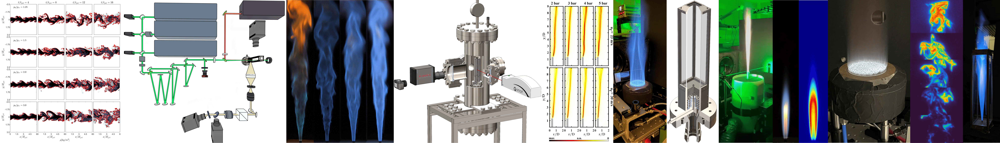

I am a Research Fellow at the Clean Energy Research Platform (CERP), King Abdullah University of Science and Technology (KAUST), where I work on atmospheric and high-pressure combustion leveraging advanced laser diagnostics, CFD, and scientific machine learning.
Research Interests
- Aerospace propulsion
- Turbulent combustion
- High-fidelity numerical simulation
- Scientific machine learning
Education
- MS, Space and Astronautical Engineering, La Sapienza University of Rome, 2020
Thesis: Turbulent mixing of transcritical jets with Direct Numerical Simulation
Advisors: Francesco CRETA & Pasquale Eduardo LAPENNA - BTech, Aerospace Engineering, SRM University, 2017